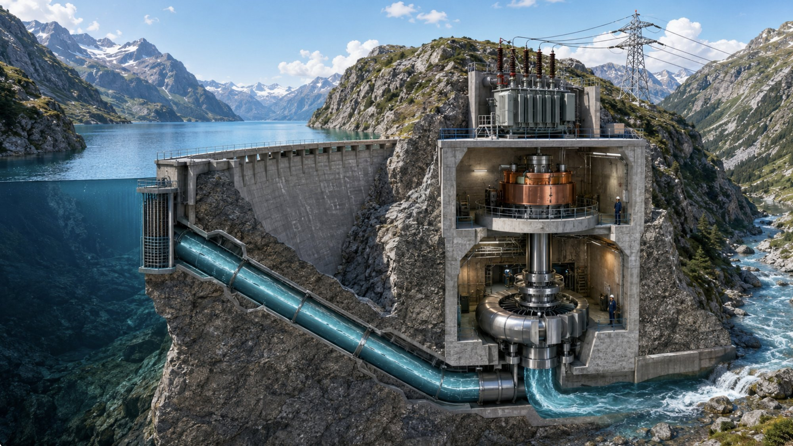

Energiebereitstellung in der Schweiz · Interaktive Folie
Folgen Sie dem Weg des Wassers vom Stausee bis ins Stromnetz: Klicken Sie die Stationen 1–8 im Bild oder im Seitenpanel an.

Bild: KI-generierte Schnittbild-Illustration · Zahlen: Bundesamt für Energie (BFE), Elektrizitätsbilanz 2024 (definitiv) · Aufbereitet für den ABU-Unterricht.